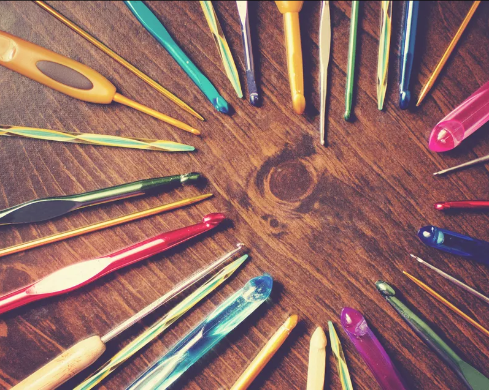
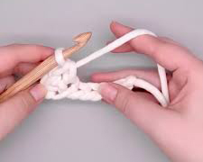

Acest blog se adreseaza tuturor pasionatilor de crosetat, mai ales incepatorilor! Aici poti gasi informatii despre nodurile si formele de baza, tutoriale de care te poti ajuta, si multe alte informatii utile despre fibrele ce pot fi folosite si de unde le puteti lua.
Acele de crosetat
You don't need many supplies to get started with crochet. The key item is the crochet hook, and there are plenty of different sizes and types. When you're choosing a beginner crochet hook, opt for one made out of aluminum because the yarn will make the yarn easily glide. The three basic crochet supplies you'll need include:
- An aluminum crochet hook size I-9 or H-8, whichever feels best in your hand
- A skein or ball of wool or acrylic yarn
- Scissors
When you want to keep up with yarn trends and find fun new projects, look for inspiration from the yarn companies. Yarnspirations is a fantastic example of a store that also hosts a blog on which guests share all sorts of crochet insights.
Esti stangaci?
You can be left-handed and crochet, too. Traditional patterns were written for right-handed crocheters, but many contemporary patterns include instructions for left-handed artisans. You'll find plenty of tips and tricks to help you along the way, and most importantly, you'll also find numerous fellow lefty crocheters to bond with and learn from.
Many of the left-handed crafters who learned to crochet decades ago had to learn the craft "backwards" from their natural approach because they learned from a right-handed crocheter. Today, that's no longer necessary. There are teachers, tutorials, patterns and more for the left-handed crocheter.
Un sal boho
Invata sa crosetezi o diversitate de saluri, unele dintre cele mai aratoase fiind cele de tip boho! Iata un exemplu de astfel de sal, realizat in aproximativ 4 ore din 100 grame de fir subtire (pentru croseta de 1mm, dar realizat cu una de 2 mm) de in. Desigur, in caz ca vreti sa optati pentru o varianta mai economica puteti folosi bumbac, sau, cele mai economicoase, fibrele sintetice.